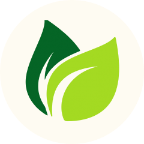
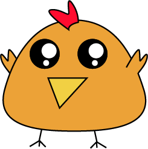

Support local farms and save the earth!
Scroll up to learn more
At its heart, farm-to-table means
that the food on the table came
directly from a specific farm,
without going through a store, market, or
distributor along the way.
With our app, we're encouraging this
movement by connecting
communities and local producers.

The vulnerability of climate change could threaten food security for millions upon millions of people.
We’re currently challenging the boundaries of what sustainability looks like in farming and food packaging to help create more effective, more efficient food supplies from the crop field to the pantry shelf.
To us, farm to table could be the solution to food supply and sustainability.
Our app helps the environment and the community by alleviating the need for the transportation of food from other states or countries and decrease the use of plastic processors as consumers can reuse containers.
You can pickup fresh groceries from farms or get it delivered right to your door!
Little steps and we’re on the way to save the enviroment!!!